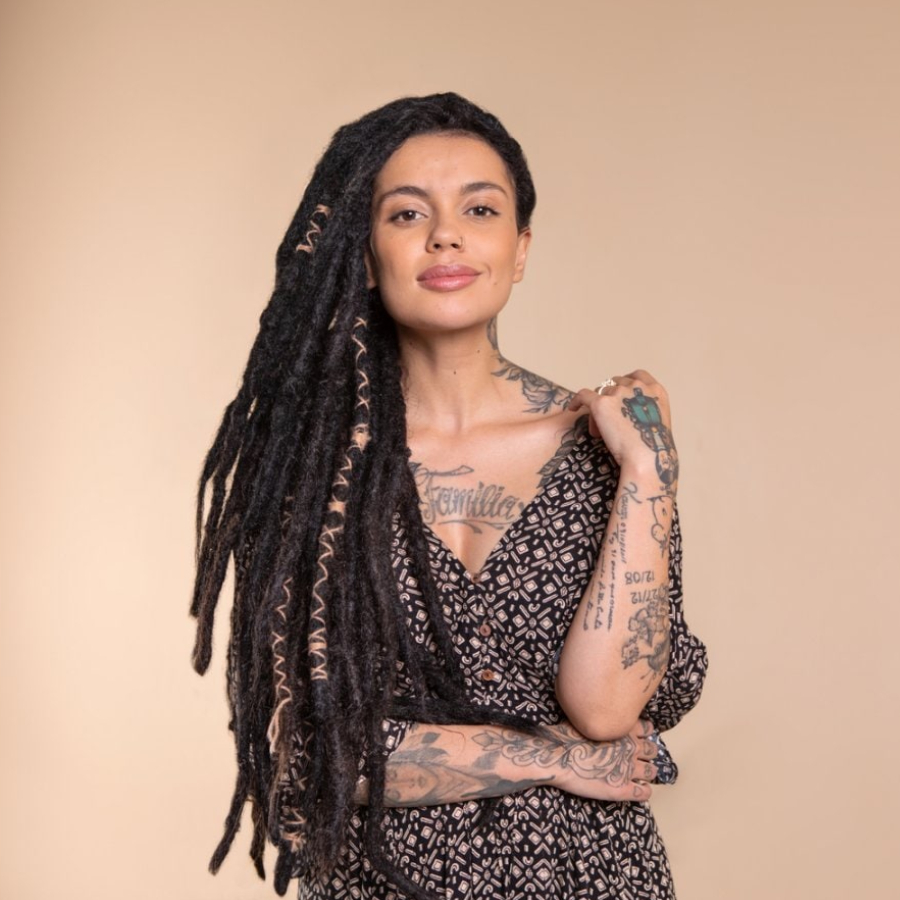

Una campaña que celebra la diversidad de las mujeres.
CYNTHIA
"Yo elijo mi
pelo naturalmente
indomable"
Soy Cynthia. Tengo recuerdos de muchas cosas buenas de mi infancia, pero desafortunadamente, cuando era una niña, yo quería contar algo que me pasó, pero no tenía voz. La sensación de gritar y no ser escuchada... No la puedo olvidar. Recuperar mi voz fue un proceso natural, fue mi autocuración, Mi pelo es un reencuentro con mi voz. Mi pelo me dio fuerzas. Y en él hay un registro de cada paso de mi vida, todas las cicatrices y todas las victorias. Mi pelo es la conexión con mis verdaderas raíces, con mi esencia. Viendo estas imágenes, me siento tan femenina, tan conectada con mi más pura esencia. Yo soy Cintia. Soy mujer. Soy madre. Y mi pelo me representa.
